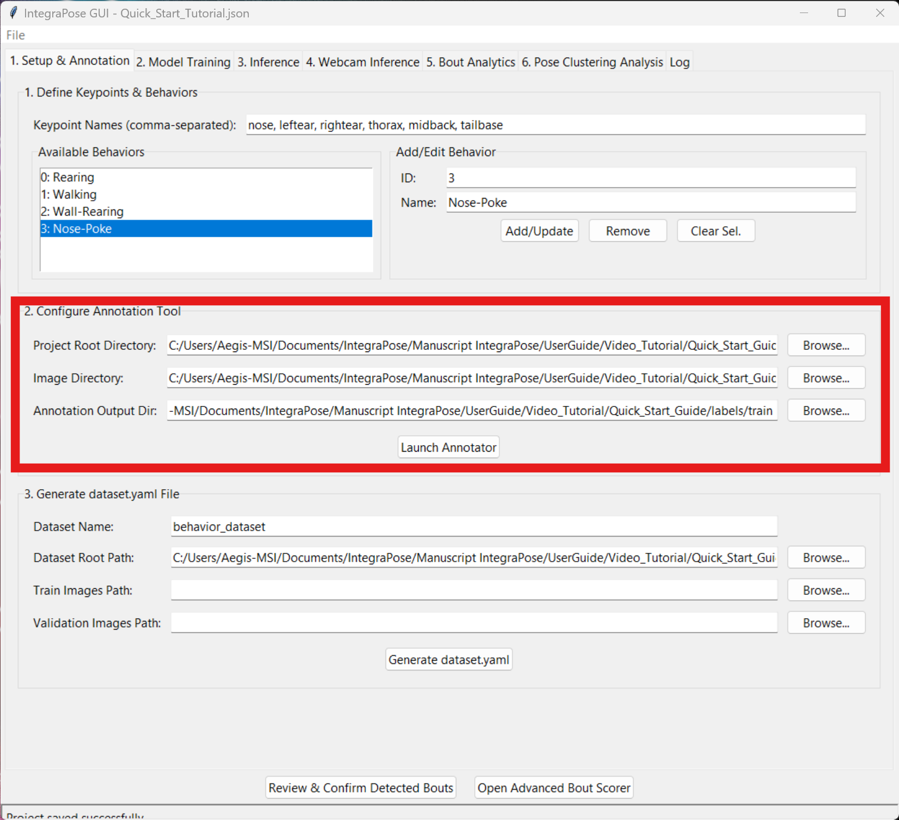

Your First Project in 15 Minutes
Welcome to the IntegraPose Quick Start guide! This tutorial will walk you through an entire, simplified workflow using a small, provided sample dataset. The goal is to give you a complete overview of the process and a feeling of success, from loading data to generating your first analysis.
Step-by-Step Tutorial
Download the Sample Project
The first step is to get the sample data. This folder contains everything you need: a short video, pre-annotated image and label folders, and a project configuration file.
Download Sample Project FilesDownload the entire Quick_Start_Guide folder from Google Drive and place it somewhere memorable on your computer (e.g., your Desktop or Documents folder).
Load the Project into the GUI
Launch the IntegraPose application by running python main_gui_app.py in your terminal.
In **Tab 1: Setup & Annotation**, click the **"Load Project Configs"** button and select the Quick_Start_Tutorial.json file from the downloaded sample project folder.
You will see the Keypoint names, Behavior names, and file paths automatically populate.
🚨 Important: Update Your Paths!
The loaded paths point to the original creator's computer. You **must** update the paths to match the location where **you** saved the sample project folder. Click the "Browse" button for each path in the "Configure Annotation Tool" section and select the corresponding folders (`images/train`, `labels/train`, and the main project root folder).
Generate the Dataset YAML File
Once your paths are correct, click the **"Save Dataset YAML"** button. This will create a `behavior_dataset.yaml` file in your project root. This critical file tells the training engine how your dataset is structured.
Click to see the structure of the `behavior_dataset.yaml` file
# Defines the main project path
path: C:\Your\Path\To\Quick_Start_Guide
# Defines the subdirectories for training and validation images
train: images/train
val: images/val
# Defines the number of keypoints and their dimensions (x, y, visibility)
kpt_shape: [6, 3]
# Defines the number of behavior classes
nc: 4
# Maps class IDs to human-readable names
names: {0: Rearing, 1: Walking, 2: Wall-Rearing, 3: Nose-Poke}
Train a Quick Model
Navigate to **Tab 2: Model Training**.
- Click "Browse" for the `Dataset YAML Path` field and select the behavior_dataset.yaml file you just created.
- For this tutorial, change **Epochs** to **"10"** to make the training very fast.
- As shown in the screenshot, the **Device** is set to `0`. If you have a compatible NVIDIA GPU, leave this as is. If not, select `cpu` from the dropdown menu.
- Click **"Start Training"**. You will see the progress in the Log tab. This should only take a few minutes.
Run Inference on the Sample Video
Navigate to **Tab 3: Inference**.
- For `Trained Model Path`, browse to the training output folder (e.g., `runs/pose/keypoint_behavior_run1/weights/`) and select best.pt.
- For `Source Video/Folder`, select the Sample_Video.mp4 file from the project folder.
- Ensure the **"Use Tracker"** and **"Save Results (.txt)"** checkboxes are checked. You can optionally provide a tracker configuration file, like the `botsort.yaml` shown below.
- Click **"Run File Inference"**. A window will pop up showing the model tracking the animal in real-time.
Click to see the structure of the `botsort.yaml` tracker file
# Tracker type: 'botsort' or 'bytetrack'
tracker_type: botsort
# Association thresholds
track_high_thresh: 0.9
track_low_thresh: 0.01
new_track_thresh: 0.85
# Match threshold and buffer size
track_buffer: 100
match_thresh: 0.8
# BoT-SORT specific settings
gmc_method: sparseOptFlow # Global Motion Compensation
with_reid: True # Use Re-identification features
Analyze Behavioral Bouts
Finally, navigate to **Tab 5: Bout Analytics**.
- For `YOLO Output Folder`, browse to the inference output folder (e.g., `runs/pose/predict/labels/`).
- For `Source Video`, select the same sample video again.
- The default bout parameters are fine for this tutorial.
- Click **"Process & Analyze Bouts"**. The table will populate with all the detected behaviors, their start times, end times, and durations.
Visually Confirm Bouts (Optional)
After processing, you can visually verify the model's accuracy. Click the **"Review & Confirm Detected Bouts"** button at the bottom of Tab 5.
This opens the Bout Confirmation Tool. Here you can:
- Select any detected bout from the list on the left.
- Use the **"Play"** and **"Frame"** buttons to watch the video segment for that specific bout.
- Click **"✓ Confirm Bout"** or **"✗ Reject Bout"** based on your review.
- Once finished, you can click **"Export Reviewed Bouts Report..."** to save a CSV file of your verified results.
Congratulations!
You have successfully completed the entire IntegraPose workflow, from loading a project and training a model to analyzing and verifying the results. You now have the foundational knowledge to start preparing and analyzing your own data. We encourage you to explore the main User Guide for more advanced features and in-depth explanations.